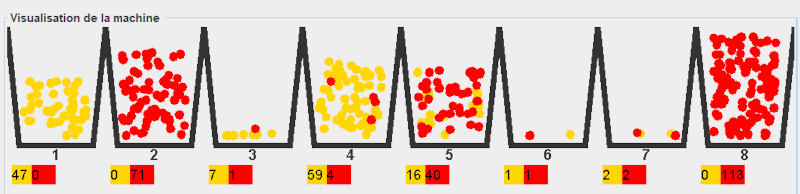

Principe du fonctionnement de l'apprentissage par renforcement
dans un jeu de Nim
Son but : maximiser sa récompense au cours des parties.
C'est quoi sa récompense ? Obtenir le plus grand nombre de boules.
Comment obtenir sa récompense ? En gagnant face à son adversaire.
Chaque allumette est représentée par un casier.
Pour représenter le nombre d'allumettes retirées on utilise des boules de différentes couleurs :
- jaune pour 1 allumette retirée.
- rouge pour 2 allumettes retirées.
Il y a au début le même nombre de boules de couleur jaune que de couleur rouge.
Pour chaque nombre d'allumettes restantes au cours des parties, la probabilité de retirer une boule jaune ou une boule rouge
(donc de retirer une ou deux allumettes) varie avec le temps.

Au fil du temps les actions ayant permis la victoire étant bien plus présentes,
statistiquement l'IA aura plus de chances de gagner.